Al principio todo fue difícil.
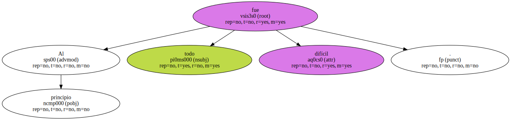Estuvimos seis meses durmiendo en la oficina , ya que era imposible encontrar vivienda.
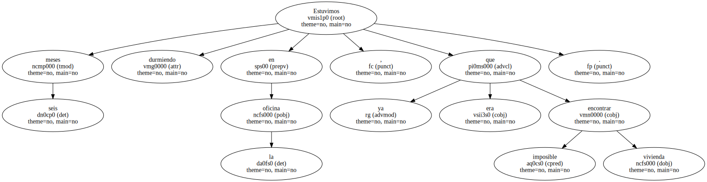Más tarde se mudó mi mujer -.
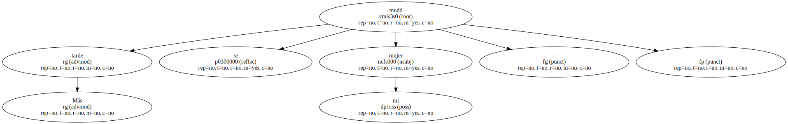- La gente aquí tiene los mismos problemas que en el Oeste y en todas partes.
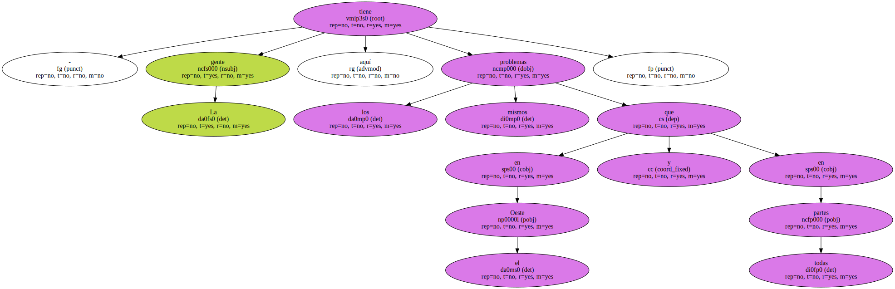Una gran parte de mis casos tiene que ver con impagos.

Con la reunificación se prestó dinero muy alegremente sin pedir garantías.
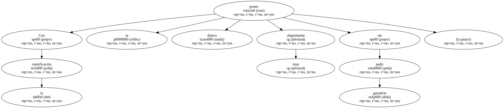Tras la orgía de consumo llega el crujir de dientes.
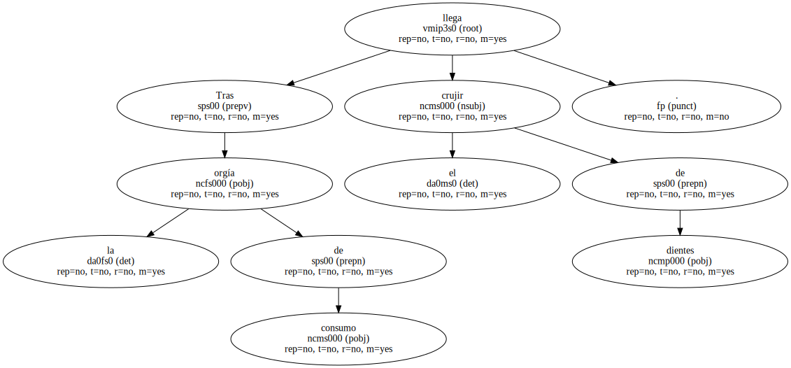Nadie sabe por cuánto tiempo.
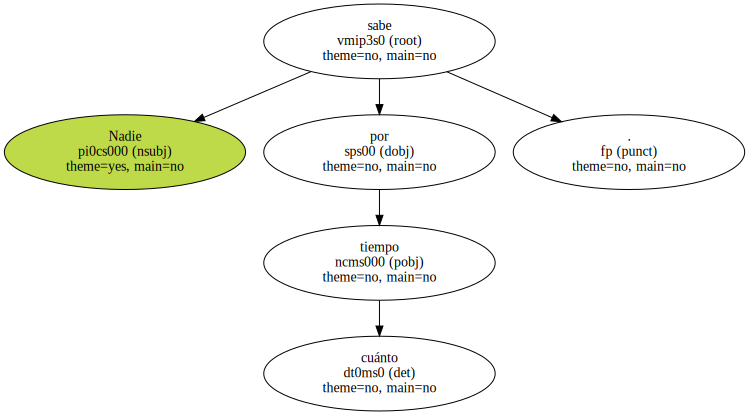Tampoco recordamos por qué llegaron -.
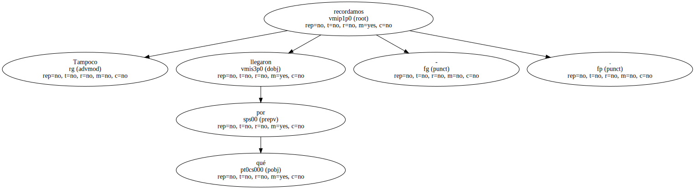Renia Greenberg , una muchacha judía de 18 años , escribía estas notas en su diario del 15 de junio de 1944 , poco antes de ser confinada en el campo de Auschwitz.
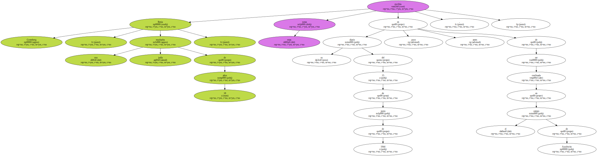Ahora las leía de nuevo , para sumarse a la marcha , en la que participaron unas 6.000 personas que celebraban la liberación en abril de 1945 de los supervivientes de este campo.
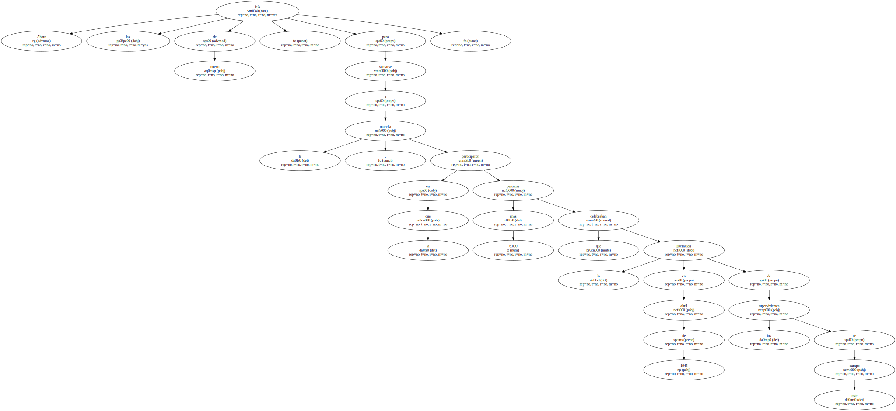Heladas gotas de aguanieve acompañaron la marcha de la comitiva hasta cubrir los tres kilómetros que separan Auschwitz del crematorio de Birkenau.
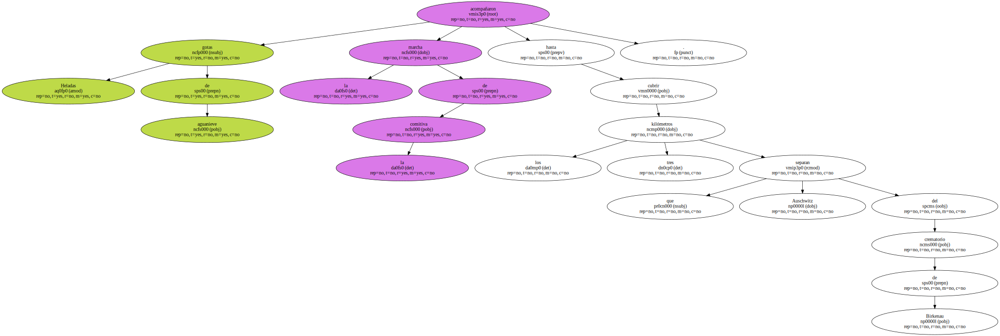El color azul dominaba el paisaje : todos los participantes , vestidos con chándales impermeables , llevaban banderas con la estrella de David de todos los tamaños.
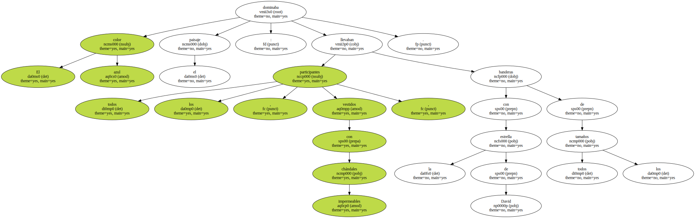